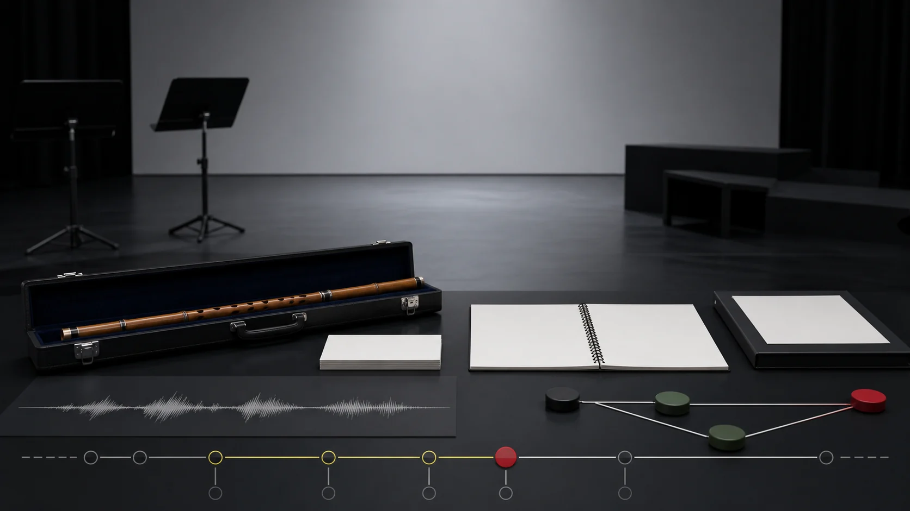

部分核實版權限制
人物
張維良（Zhang Weiliang）
已核實L2 · 已核實摘要3 個去重來源8 項核對紀錄
8 項已記錄核對的陳述 · 618 字正文
本頁已達站內正文門檻，並附核對來源。層級只反映資料覆蓋的程度，並不等於外部專家認證；引用之前，仍請核對原文。來源數目按站內規則去重，相互引用的依賴關係，尚未逐一追查。
已核實內容
1 篇專題
相關來源
3 筆
部分核實版權限制
部分核實版權限制
本篇視覺示意（非教學圖）

人物
8 項已記錄核對的陳述 · 618 字正文
本頁已達站內正文門檻，並附核對來源。層級只反映資料覆蓋的程度，並不等於外部專家認證；引用之前，仍請核對原文。來源數目按站內規則去重，相互引用的依賴關係，尚未逐一追查。
1 篇專題
3 筆
